Android app new
My Phone for Android: a free, open-source app that puts My Phone in your pocket. Texts, calls, voicemail and settings, with notifications, calls in and out from the app itself, and a PIN lock. Pair it once and it stays connected for weeks.
Privacy policy for the Android app →
Terms of Service for the Android app →
It works day to day, but it's new: keep the web My Phone handy. It needs own-pbx up to date — run pbx-update after each app update. Calls now work both ways: the app places calls and rings for incoming ones, alongside your desk phone or Zoiper.
Screenshots

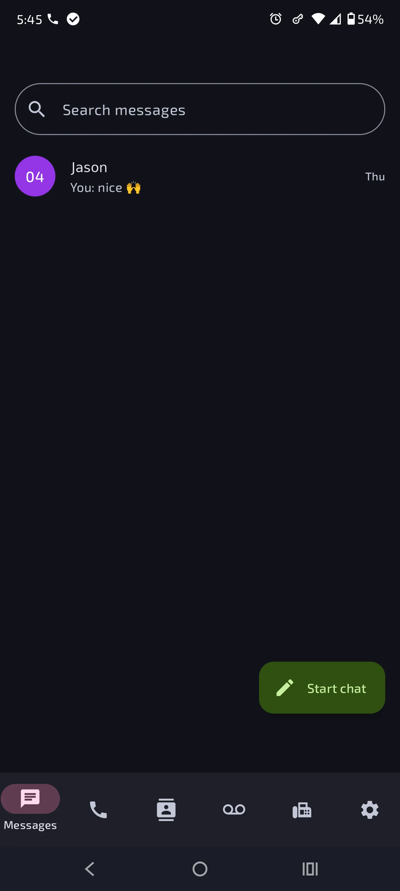

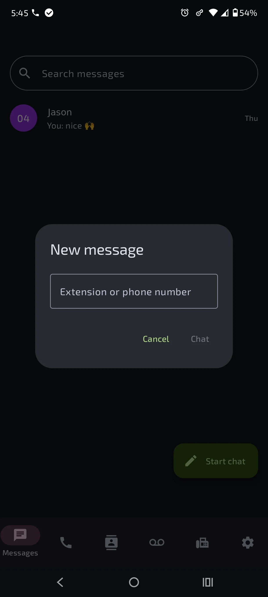

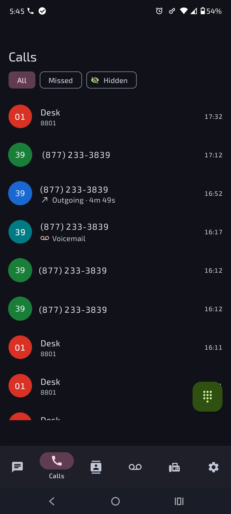

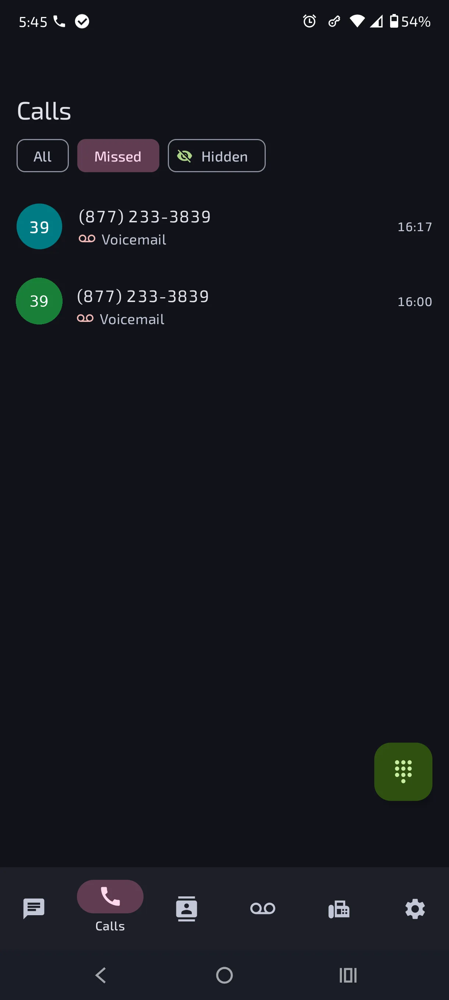

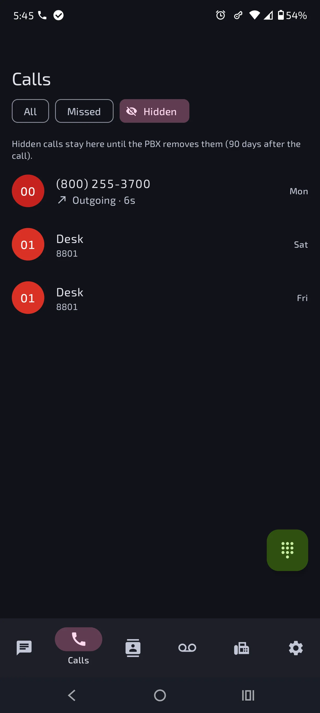

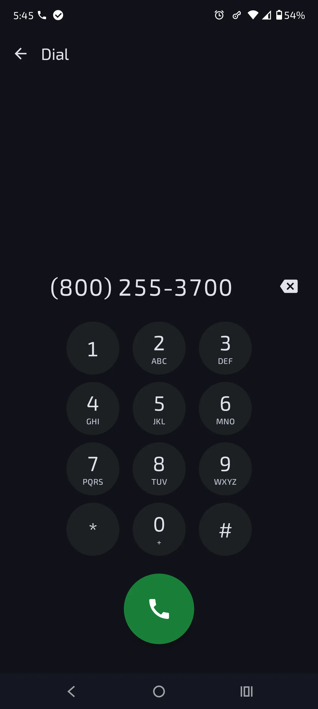

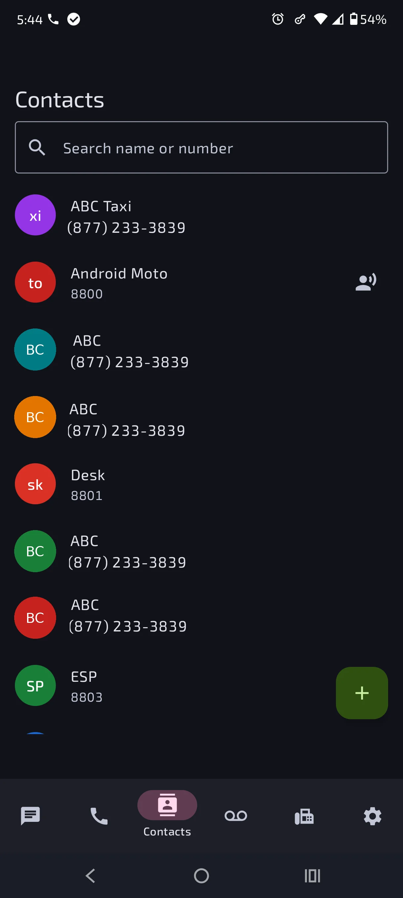

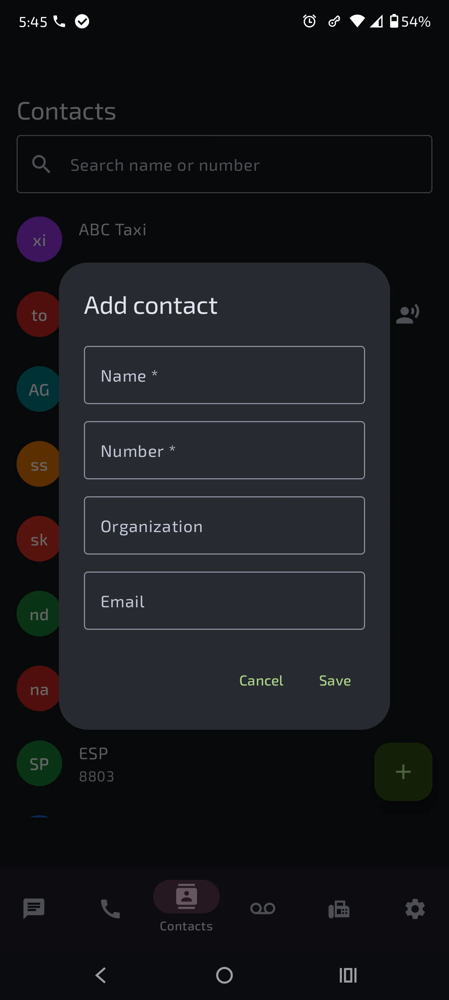

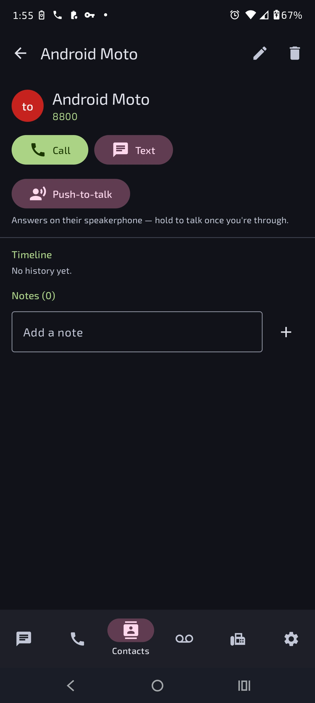

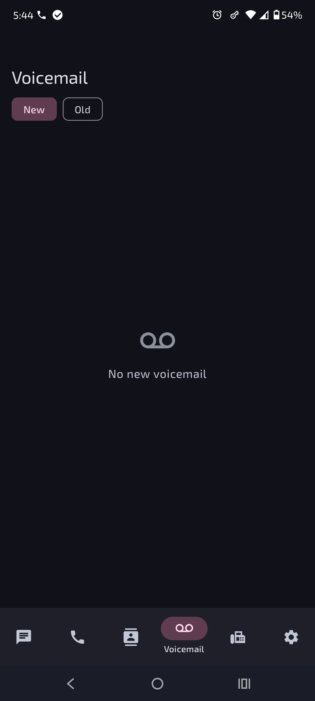

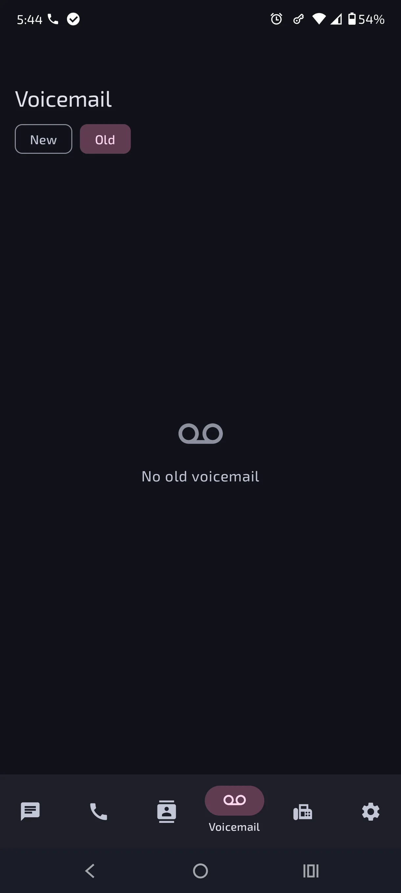

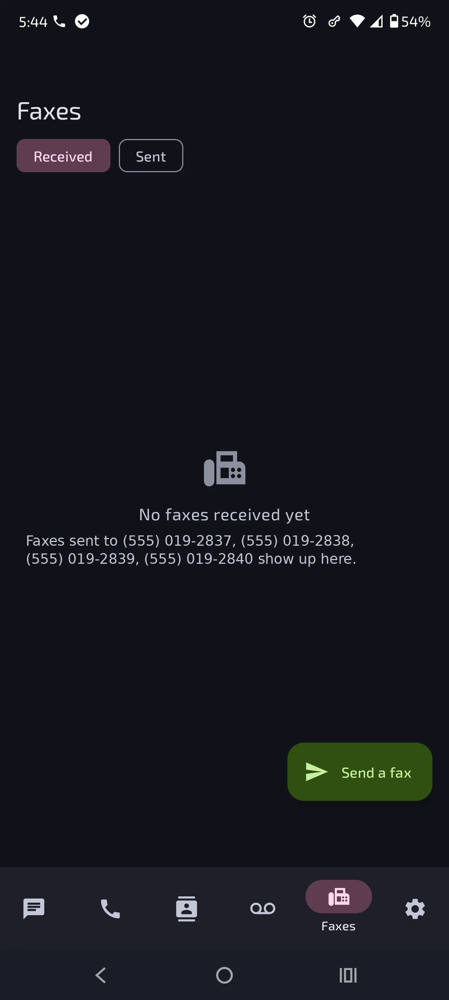

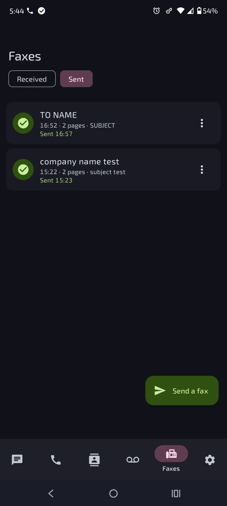

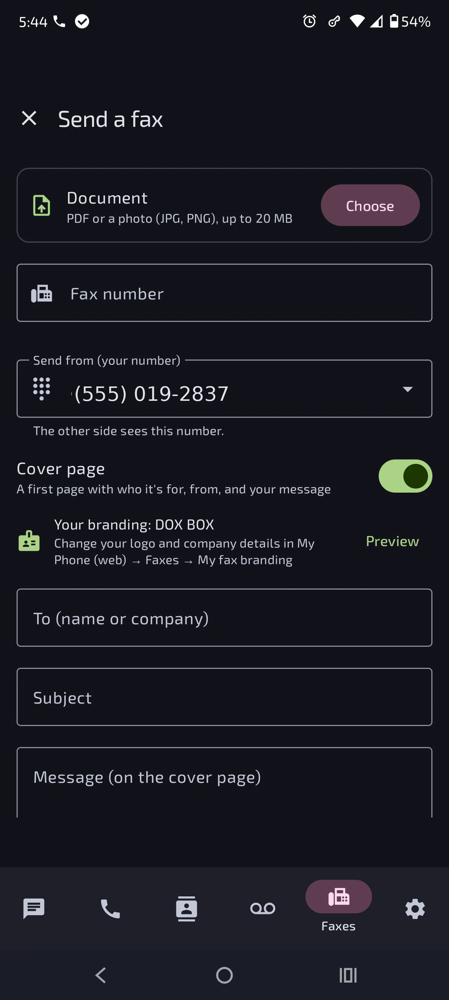

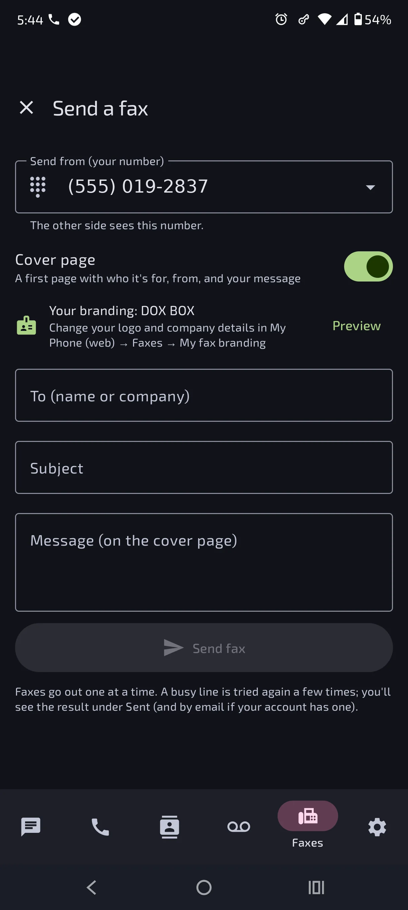

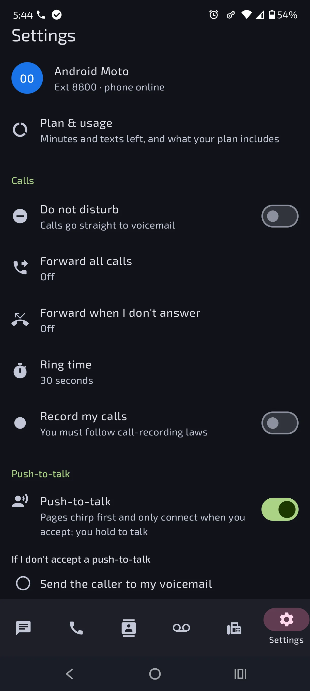

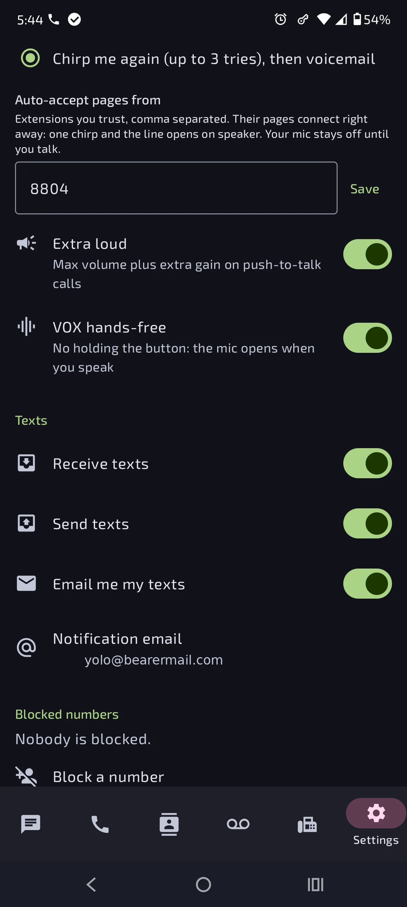

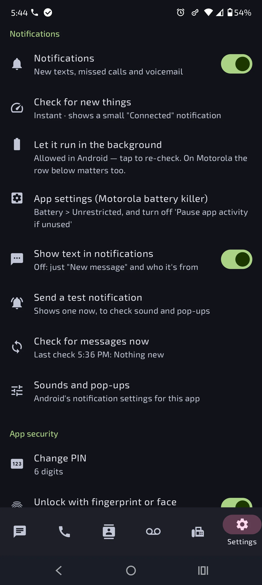

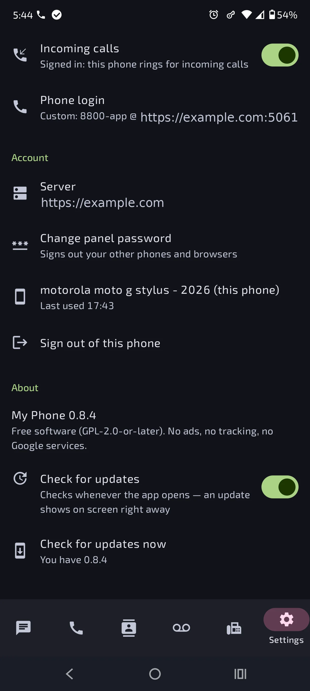

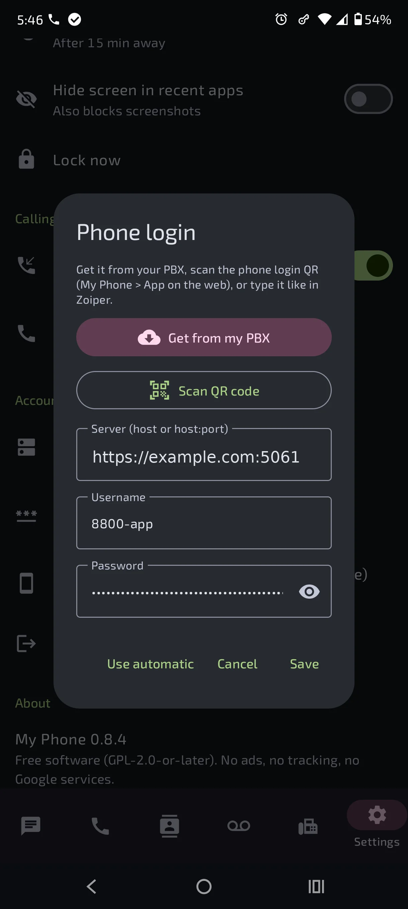

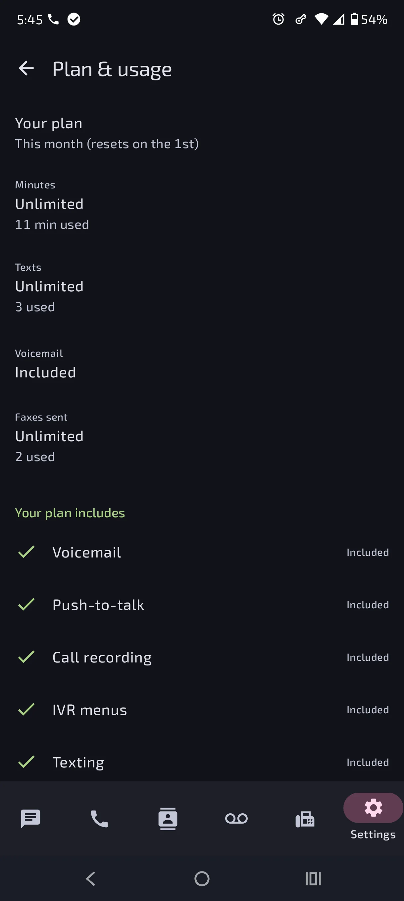
Screenshots from 0.8.4, showing the new Faxes tab. Names, numbers and addresses shown are demo data. Tap one to pop it up full size without leaving the page — tap the photo to zoom, tap outside it (or the ×) to close.
What it does
| Screen | What you can do |
|---|---|
| Messages | Inbox like Google Messages: search, unread dots, swipe to delete with Undo, long-press to select several (Select all, Delete), Start chat to any extension or number, chat bubbles, copy, block, and a Call button in a chat. With more than one number, a From chip above the message box picks which one a text goes out from (it starts on the number the contact texted). |
| Calls | All / Missed / Hidden. Swipe left or long-press to hide calls (with Undo); hidden calls wait under Hidden until the PBX removes them after 90 days — nothing is deleted. Tap a call to Call, text back, hide or block. The dial pad button places a call. Opening Calls clears the missed-call badge. |
| Voicemail | New / Old. Tap to play, with a seek bar, elapsed/total time and 1x / 1.5x / 2x speed. Then Call back, Text, Move to Old / New, Block or Delete (swipe or multi-select, with Undo). |
| Contacts new | Your private address book from the PBX: search, add, Call or text. Open a contact for its timeline (calls, texts, voicemail and recordings with them, newest first) and notes. A saved copy stays on the phone, so your contacts still show with no internet or when the PBX is down (“Offline — showing saved contacts”). Names from your contacts also show in Calls, Messages and Voicemail, and on the incoming-call screen. |
| Faxes new | Received and Sent; tap a fax to read it in the app (zoom, Share, Open with, Call back, Delete). Send a fax: choose a PDF or photo, enter the fax number, pick your number to send from, add an optional cover page (with a Preview of your branding). Faxes left this month are shown; new faxes get a notification. Shown when your plan includes Fax. |
| Settings | Do Not Disturb, call forwarding, ring time, record my calls, receive/send texts, text emails, notification email, blocked numbers; Notifications; Calling (incoming calls, phone login); PIN, fingerprint, lock timer, screenshot blocking; panel password, signed-in phones, sign out. |
| Plan & usage new | At the top of Settings: minutes and texts left this month (the month resets on the 1st) and what your plan includes — voicemail, push-to-talk, call recording, IVR menus, texting, fax (with faxes sent and left). When the admin turns on App store mode for you, this is replaced by “For account details, visit …” (and the admin can hide plans in the web portal too). |
| Push-to-talk options new | Under Settings → Push-to-talk: If I don't accept a push-to-talk (send the caller to voicemail, or chirp again up to 3 tries then voicemail), Auto-accept pages from (extensions you trust connect instantly, no Accept tap), Extra loud (max volume plus extra gain on push-to-talk calls) and VOX hands-free (no holding the button — the mic opens when you speak). |
| Updates new | The app checks for updates every time it comes to the front and puts the update on screen right away — no trip to Settings needed. Later just postpones it to the next time the app is opened; it only goes away for good once installed. Settings → About still shows your version, with a Check for updates now button. |
Everything you change in the app goes through the same rules as the web My Phone: your plan limits, the admin's safety lock, block lists and rate limits all apply the same way.
Get the app
- On the phone, open GitHub → Releases → latest (My Phone 0.7.17 or newer) and tap my-phone-<version>.apk under Assets.
- Open the downloaded file. Android asks to allow installing from your browser or file manager — allow it once.
Updates: every change to the app is published as a new signed release automatically. The app checks whenever it comes to the front and shows the update on screen straight away; tap Update and it downloads and hands the .apk to the installer — it installs over the top and keeps your sign-in, PIN and settings. (Settings → About shows your version and has a Check for updates now button too.) Run pbx-update on the PBX too, so both sides match.
Earlier builds came from GitHub Actions and were signed with a test key. Android won't install the signed release over one of those (“App not installed” / “conflicts with an existing package”). Uninstall the old My Phone first, install the release, then connect again with Sign in with my browser. This is a one-time step; later releases update normally.
Free software (GPL-2.0-or-later; the built-in phone engine, Linphone, is GPL-3.0), no ads, no tracking, no Google Play Services or Firebase. Needs Android 8.0 or newer.
Connecting the app
Sign in with my browser new
The quickest way, all on the phone — no QR code, no typing a code:
- Open the app. The Server is already filled in (change it if yours is different). Tap Sign in with my browser.
- My Phone opens in a browser tab inside the app (like links in Gmail). Sign in with your password — or Sign in with Authentik if single sign-on is on.
- The PBX makes a pairing code by itself and sends you back to the app, which connects. Then you choose your PIN.
If the tab doesn't jump back on its own, tap Open the My Phone app on that page (some phones' browsers want one tap); the code is shown there too as a last resort.
The app sends a random one-time value with the sign-in, and only connects by itself when the answer carries that value, from the same server, within 15 minutes. A pairing link from anywhere else is only filled in and waits for you to tap Connect, so a link on some website can't quietly pair your app to another server. The app still never sees your password.
With a pairing code
The app can also connect with a pairing code from another device:
- In a browser, sign in to My Phone and open App → Get a pairing code.
- In the app, tap Scan QR code and point the phone at the QR on your screen. It fills in the server and code and connects.
Other ways, same result:
- Phone's own camera: scan the QR; it opens the app with everything filled in — tap Connect.
- Page open on the phone itself: tap Open in the My Phone app on that page.
- Type it: tap the code and server on the web page to copy them, and enter them under or type it.
Server: https://myphone.example.com
Pairing code: K7QH2MXP (example; works once, for 5 minutes)The server is your My Phone address from outside (for example published through Cloudflare Tunnel), or http://<PBX-IP>:8001 at home. An http:// address isn't encrypted; the app warns you — only use it on your home network or a VPN.
Each phone's sign-in lasts 60 days after you last used the app — use it weekly and you never pair again. Changing your panel password signs out all your other phones. You can sign out any phone from My Phone → App or from the app's Settings.
Calls
The app has a built-in phone, so it makes and takes calls itself — no Zoiper needed.
- In the app: Settings → Calling → Phone login → Get from my PBX, check the details, tap Save.
- Use the dial pad on Calls, or Call on a call, a voicemail or in a chat. Allow the microphone the first time.
Instead of Get from my PBX you can scan the phone login QR (web: My Phone → App → Show phone login QR; the password stays hidden until you ask), or type the server, username and password like in Zoiper.
- During a call: mute, keypad (for menus like
*97voicemail), speaker, hang up. Leave the app and an On a call notification keeps it going, with a Hang up button. - If a call fails, the screen says why with a SIP code; Copy details copies it for whoever looks after the PBX.
- How it connects: like a remote Zoiper — TLS to the edge on port 5061, encrypted audio (SRTP), with your extension's login.
- Needs the remote-access domain set under Admin → Network (the one Zoiper uses away from the office).
Incoming calls
Settings → Calling → Incoming calls (on by default). Your extension then rings the app at the same time as your desk phone and Zoiper — whichever answers first takes the call, the others stop.
- Ringing: a full-screen call screen, even over the lock screen, with Answer and Decline. If the phone is in use you get a pop-up notification with the same buttons.
- Its own line: the app signs in as
<extension>-app(for example8800-app) with the same password, so it never knocks your desk phone or Zoiper off. Get from my PBX fills this in — if you set up the phone login before 0.7, tap Get from my PBX → Save once. - Status: under the switch it shows Signed in: this phone rings for incoming calls, or what's wrong.
- Battery: to ring, the app stays connected with the small “My Phone is connected” notification and needs Let it run in the background allowed (Settings → Notifications). The row now stays visible after you allow it — tap it any time to re-check. Motorola phones have a second switch: use the App settings (Motorola battery killer) row under it — set Battery → Unrestricted and turn off “Pause app activity if unused”. Turn Incoming calls off and it only places calls.
- If Android kills it anyway (some brands close even foreground apps after a few hours): since 0.7.9 the app restarts its connection by itself — a background check every 15 minutes brings it back and it re-registers, instead of staying signed out until you open it. Swiping it away from Recents also restarts it. The “Connected” notification disappearing for a while is the sign this happened.
- If the app isn't signed in (phone off, no signal), calls ring your other phones and go to voicemail as before.
Push-to-talk
With push-to-talk switched on (Settings → Push-to-talk — your plan must include it, or your admin must allow it on your account), the app works like a walkie-talkie:
- Talking: contacts who can receive push-to-talk get a PTT button (long-pressing the contact works too). Your microphone starts muted once you're connected — hold the big button to talk, let go to listen.
- Receiving: a page never connects by itself — unless the caller is on your Auto-accept pages from list (Settings → Push-to-talk), in which case one chirp plays and the line opens on speaker right away, walkie-talkie style (your mic still stays off until you talk). Otherwise your phone plays the PTT chirp — a short three-tone alert (an original sound generated by the app, not a ringtone) that sounds over your normal ring and notification sounds, with vibration — and shows Accept / No accept. Accept opens the hold-to-talk screen on speakerphone; No accept sends the caller straight to voicemail, and letting it ring out follows your "If I don't accept a push-to-talk" setting below.
- On the call: Speaker, Extra loud and VOX buttons sit above the hold-to-talk button. With VOX hands-free on (Settings → Push-to-talk) you don't hold anything — the mic opens when you speak.
- From any phone (desk phone, Zoiper): dial
*88+ the extension. See feature codes.
Notifications
New texts, missed calls and voicemail pop up with sound, and the app icon shows how many are waiting. Tapping one opens that chat or tab. Settings → Notifications:
| Setting | What it does |
|---|---|
| Check for new things | Instant (default): the app stays connected and the PBX tells it within seconds. Shows a small “My Phone is connected” notification — Android requires it; long-press it to hide that category. Or every 30 s, 1 min or 5 min, or every 15 min to save battery (no “connected” notification). |
| Let it run in the background | Always shown while the app stays connected. Tap and choose Allow; afterwards the row stays, reading “Allowed in Android — tap to re-check”, so you can get back to it if your phone quietly turns it off again. |
| App settings (Motorola battery killer) | Opens Android's App info page for My Phone. On Motorola (and some other brands) this second page is the one that matters: Battery → Unrestricted, and turn off “Pause app activity if unused” — without it the phone can kill the app even when background running is allowed above. |
| Show text in notifications | Off: just “New message” and who it's from. The lock screen only ever says “New message” unless your phone allows private content there. |
| Send a test notification / Check now | Check sound and pop-ups; Check now shows when the last check ran and what it found. |
Nothing you've already seen in the app pops up again, and nothing pops up while the app is open.
Missed calls
- Each missed call shows who and when — “Missed call · (555) 019-2837 · 2:14 PM”; several are listed newest first. Calls that rolled to voicemail count as missed too.
- The app rang and nobody answered: it notifies the moment the ringing stops.
- Answered on another phone (desk phone, Zoiper): not a missed call — the app shows “Answered on another phone”.
- Phone was offline (no signal, airplane mode) and never rang: the notification comes as soon as it reaches the PBX again, with the time of each call. With Check for new things on every 15 minutes this can take up to 15 minutes.
PIN lock
- After pairing you choose a 6-digit or 12-digit PIN. Easy PINs like
111111or123456are refused. - The PIN never leaves your phone; only a salted hash is kept, in storage encrypted by the phone's hardware key store.
- Optional fingerprint or face unlock — your PIN always works too.
- Lock immediately when you leave the app, or after 1, 5 or 15 minutes away — even if Android closes the app in between. Restarting the phone always locks it.
- Coming back through the PIN keeps your place: the same tab, open chat and half-filled settings (handy when you pop out to a password manager). The app's own QR scanner doesn't count as leaving.
- Wrong PINs make you wait longer each time; 10 wrong in a row signs the app out (your account is untouched — just pair again).
- Screens are hidden from screenshots and the recent-apps view; turn off Hide screen in recent apps to take screenshots.
If the app closes by itself
Open it again: it shows “The app closed unexpectedly” with the error. Tap Copy and close and send it to whoever looks after your PBX. It holds only the error, the app and Android version and the phone model — no messages or numbers.
For the admin
- Nothing to configure:
pbx-updateadds the app API, its tables (app_devices,call_hidden) and thesegnopackage for QR codes. No new ports — the app uses the same address as the web panel, and calls use the existing edge. pbx-updatealso gives every extension a second SIP line,<extension>-app, with the same password. When it's signed in, a call to the extension rings both lines and the first to answer wins; ring groups do the same.- App sign-ins show up in Recent sign-ins and the audit log like web sign-ins, with the same lockouts (10 failures per address in 15 minutes). Showing a phone login QR is audited too.
- Instant notifications hold one request open per phone for up to 55 seconds (under Cloudflare's 100-second limit); the PBX checks for news every 2 seconds while it waits.
- The app only reaches My Phone features. Admin pages stay office-network only, even for admin logins.
- The JSON API the app uses (
/api/v1/app/*,/api/v1/me/*, including/me/waitand/me/sip) is documented indocs/API.md.
Coming next
A Do Not Disturb quick-settings tile, push for incoming calls without the “connected” notification, recordings, and signed releases / F-Droid. The full plan is in docs/ANDROID_APP_PLAN.md.